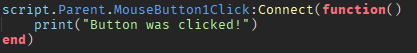

üîç What Are GUIs?
GUIs (Graphical User Interfaces) are visual elements players interact with — like buttons, health bars, text, and menus.
They appear to each player individually (on the client side), so you'll usually use LocalScripts.
üß∞ 1. Common GUI Elements
üõ† 2. Making a Simple Button
üåü Goal: A button that prints something when clicked
üéõ 3. Changing GUIs with Code
You can use scripts to change size, text, visibility, color, etc.

üߺ 4. Making Clean Layouts
Use layout tools:
- UIListLayout: Stacks items vertically or horizontally
- UIPadding: Adds space inside frames
- UIScale: Makes UI fit all screen sizes
Place them inside Frames to auto-organize buttons, shops, inventory slots, etc.
üì§ 5. Sending GUI Actions to the Server
GUIs run on the client, but sometimes you need to send actions to the server (e.g., buy an item).
Use RemoteEvents:
Example: Buying an item
ü©∫ 6. Health Bar Example
Setup:
Add a ScreenGui with a Frame named HealthBar (set BackgroundColor to red).
Inside that, add another Frame named Fill (set to green, and size to {1, 0}, representing 100%).
Script:
üîÑ 7. Toggle Menus

üìÅ 8. Best Practices
- Use clear names (CloseButton, InventoryFrame, ShopUI)
- Keep your GUI layout inside
StarterGui - Use ModuleScripts to handle logic if your UI grows
- Use UI constraints like
UIScalefor cross-device compatibility
ü߆ 9. Bonus: UI Animations (Tweening)
You can make frames slide in/out or fade using TweenService.

üß™ Want Practice?
Here are some GUI mini projects you can try: